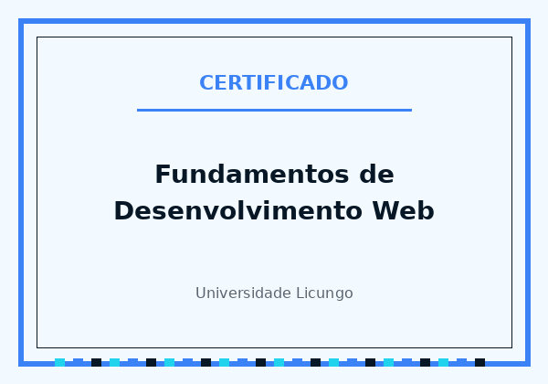
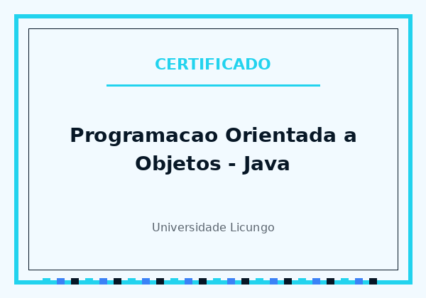

Formação académica
-
Licenciatura em Informática — Programação e Design Web
-
Ensino secundário
Experiência & projetos académicos
- Desenvolvimento de aplicações desktop em Java/JavaFX para disciplinas de Programação Orientada a Objetos
- Construção de páginas e sistemas web (HTML, CSS, JavaScript) em trabalhos práticos da faculdade
- Modelagem de bases de dados relacionais (MySQL) em exercícios de Sistemas de Gestão de Bases de Dados
- Trabalho em equipa em projetos de grupo, com divisão de tarefas e apresentações


Competências técnicas
| Área | Tecnologia | Nível | Contexto de uso | |
|---|---|---|---|---|
| Desktop | Java | Aplicações académicas orientadas a objetos | ||
| JavaFX | Interfaces gráficas para sistemas de gestão | |||
| Web | HTML5 & CSS3 | Sites institucionais e portefólios | ||
| JavaScript | Interatividade e integrações simples | |||
| Dados | MySQL | Modelagem e consultas para sistemas académicos | ||